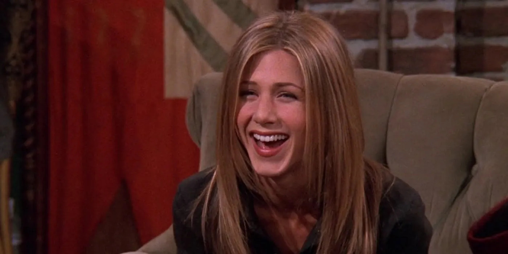
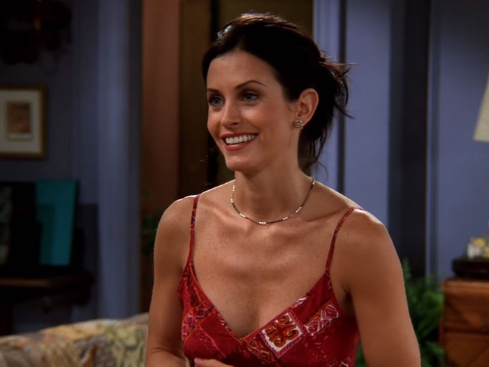
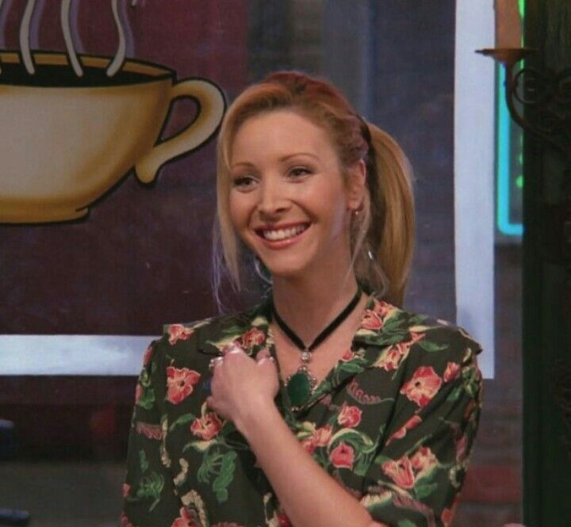
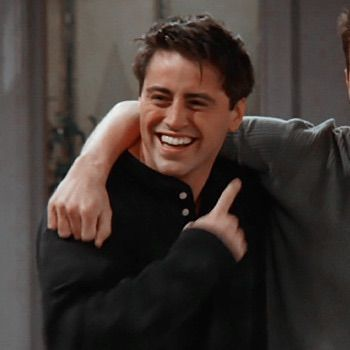
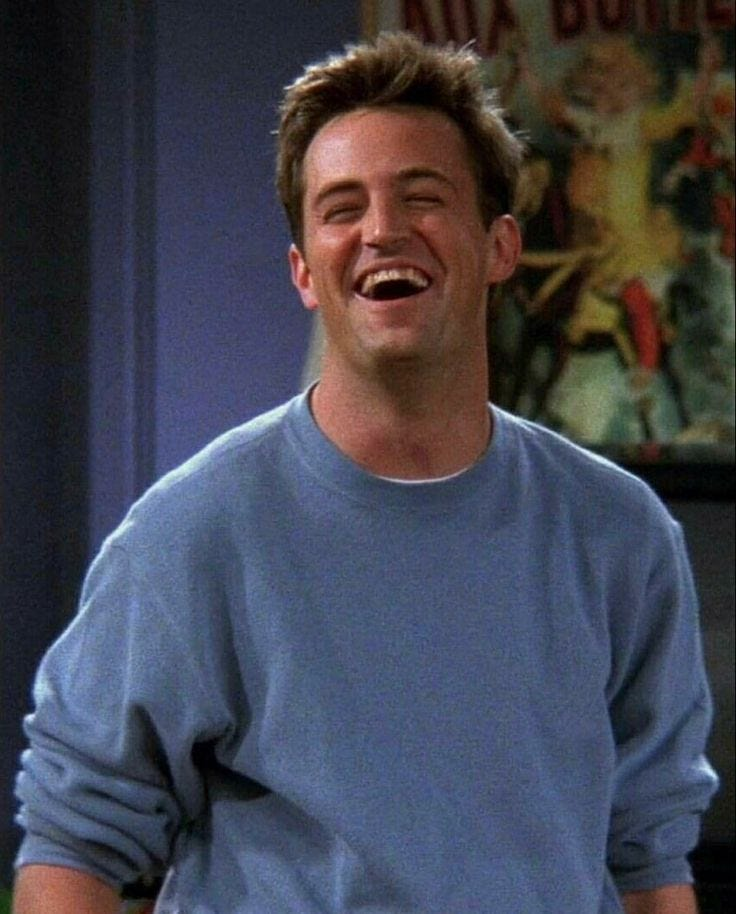
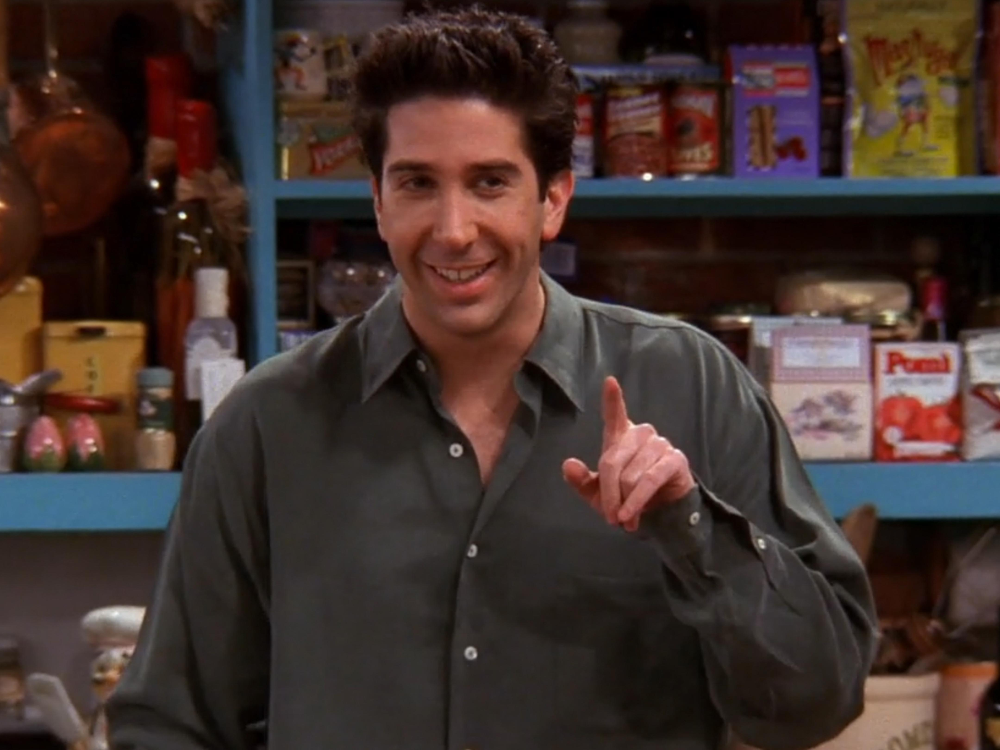

Main Characters
Meet the Characters
Below you will find each of the main characters along with a short bio about them as well as a little blurb at the end on the importance of the characters to the show. Enjoy! 😃
- Rachel Green
- Monica Geller
- Phoebe Buffay
- Joey Tribbiani
- Chandler Bing
- Ross Geller
The fashion-forward waitress-turned-executive, known for her iconic hairstyles and journey of self-discovery.
The competitive chef with a heart of gold, famous for her obsessive cleanliness and nurturing nature.
The quirky, eccentric musician with a mysterious past and a love for singing at Central Perk.
The lovable aspiring actor, famous for his charm, appetite, and the catchphrase "How you doin'?"
The sarcastic office worker who uses humor to navigate life's awkward moments and relationships.
The intelligent but awkward paleontologist, known for his romantic misadventures and love for dinosaurs.
Each character has their own unique personality and story arc that contributes to the show's enduring popularity. From Rachel's fashion evolution to Ross's love for dinosaurs, the characters' journeys resonate with fans of all ages. Over ten seasons, viewers watch as friendships deepen, relationships blossom, and each character grows in their own way. The chemistry between the cast and the relatable storylines has made Friends a timeless classic. Whether it's Monica's Thanksgiving dinners, Joey's famous "How you doin'?" catchphrase, or Phoebe's unforgettable "Smelly Cat" song, the show is filled with moments that continue to bring joy to fans around the world.